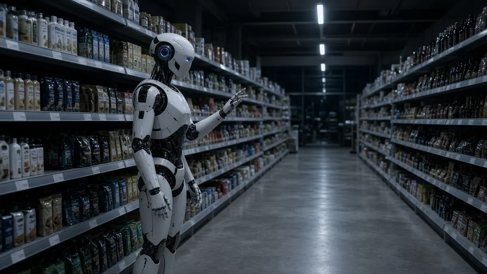

Unitree
Danish grocer Føtex pilots Unitree humanoids for overnight restocking
Short answer: Føtex, the Danish supermarket chain that is part of Salling Group, has started a multi-year pilot with Danish start-up HIVE Robots to train humanoid robots to restock shelves after closing time, ESM Magazine reports. The first trials are at a Føtex store in Lyngby, north of Copenhagen, ESM says, citing Euronews.
According to ESM, the robot hardware comes from the Chinese developer Unitree, while HIVE Robots writes the control software and handles the machine learning. Trials run outside opening hours so the robots can be tested and data collected without shoppers in the store.

To gather training data, human operators wearing VR headsets and using handheld controllers guide the robots through tasks such as lifting bags of pasta onto shelves, ESM reports. The current prototypes work more slowly than human staff, and developers expect AI progress to speed them up, it adds.
Simon Kudsk, Føtex's operations director, is quoted as saying that stores are designed around customers moving through them, which makes conventional industrial robots unsuitable, and that a human-shaped robot can move around the store naturally. ESM adds that Salling Group says the aim is to support staff rather than replace them, that HIVE Robots is targeting commercial deployment by early 2027 under an hourly service fee, and that Kudsk estimates a full rollout across the chain could take up to five years.